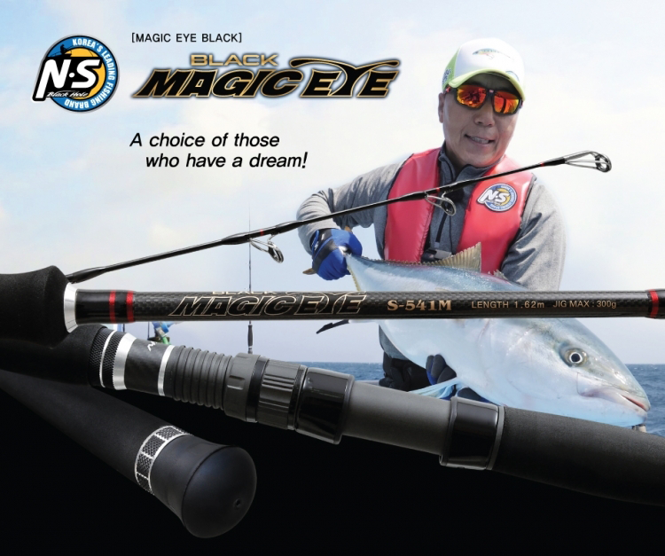
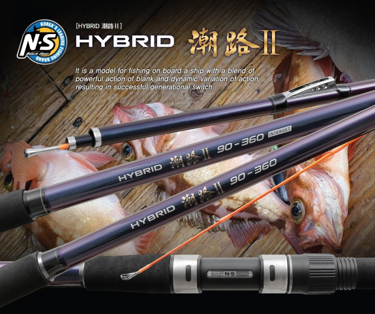
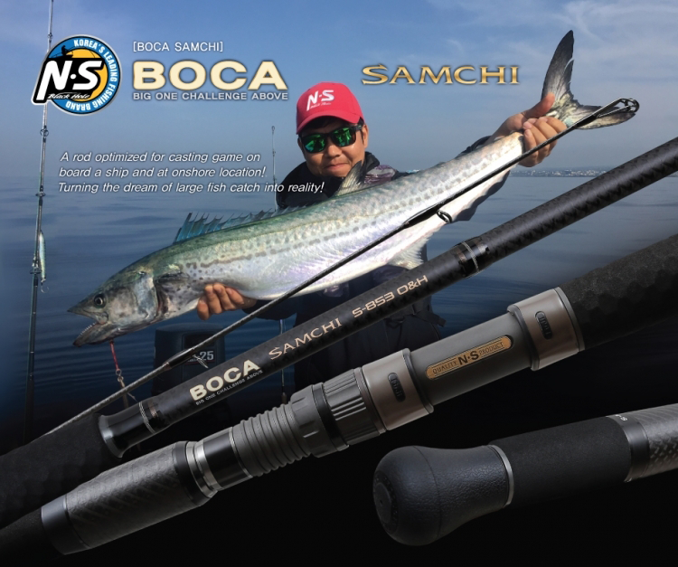
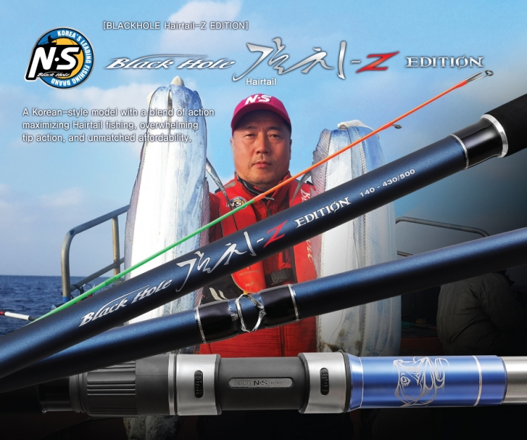
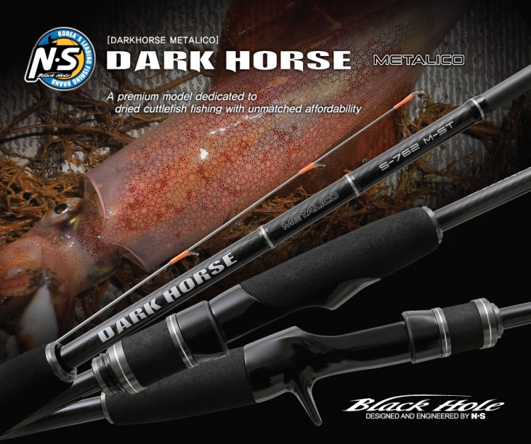
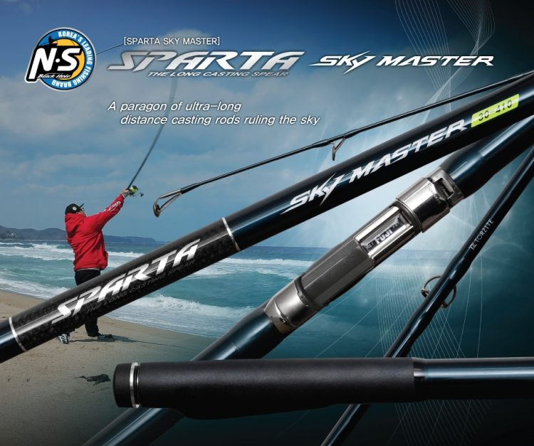
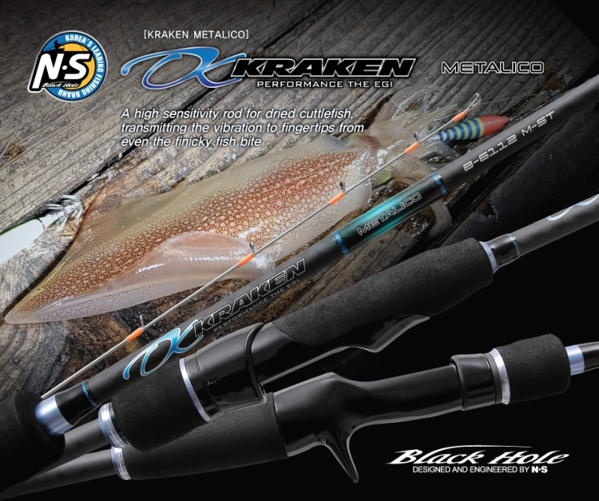
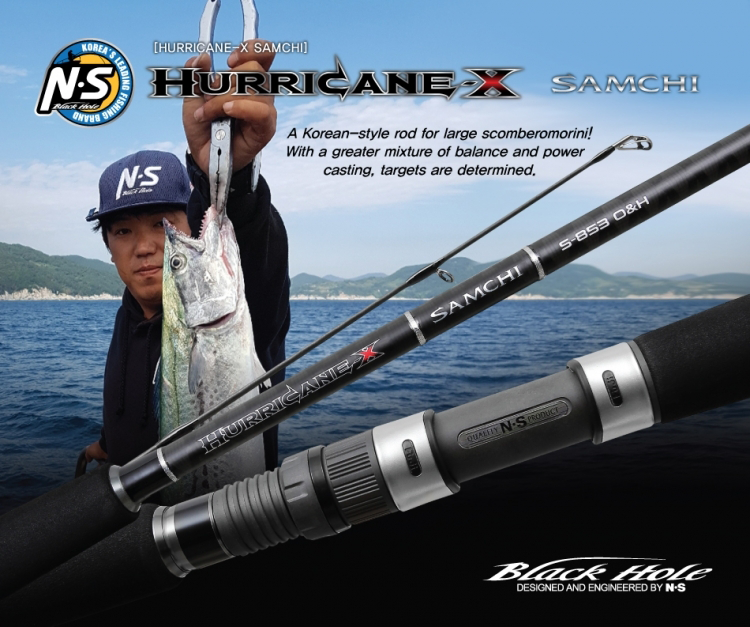
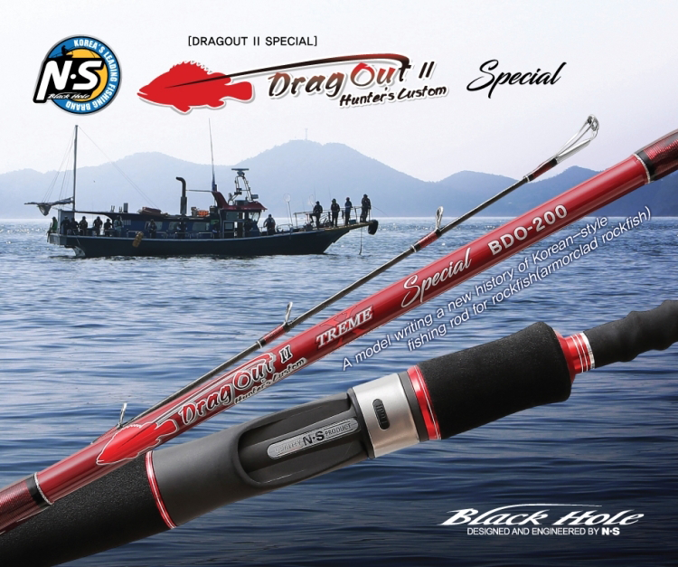

An amazing high-strength titanium Korean-style rod! This model detects the movement of bait ensnared by cuttlefish’s tentacles. Cuttlefish, a cephalopod, shoots out its two tentacles and bring the bait to its mouth at the sight of the bait. At this time, it is difficult to determine the timing for hook-setting. This rod dedicated to cuttlefish fishing was made from titanium tip and wxw+nano carbon material to provide excellent sensitivity
B-1452H (GRIP 380mm) This model is ideal for catching active cuttlefish or other cuttlefish in rough floor of underwater terrain such as seawaters with strong tidal current, using the sinks of size 10-40(37.5~150g) B-1602MH (GRIP 380mm) It can provide excellent capability to target the cuttlefish during finicky biting season or in deep mudflat terrain etc., using the sinks of size 10-30(37.5~112g)

A choice of those who have a dream! Among many rods in the Magic Eye Series popular since their first launch in 2007, this model was built to basic specification for vertical jigging fishing and offers power comparable to XH and XXH grade. Combining the‘delicate and evolved’carbon fabric and resin, this model maximized the blank elasticity, allowing anyone to perform low-pitch and high-pitch jerking of metal jigs easily and rhythmically. It bends, like a bow, to provide power strong enough to land even the tuna with a weight of more than 50kg without difficulty.
S-541M (GRIP : 380mm) During vertical jigging fishing that uses spinning reel, the prolonged jerking actions will result in exhaustion of physical strength and fatigue in the shoulder and elbow muscles when the metal jig weighs more than 150g and reel and rod are positioned slightly above the bait reel. The blank, designed in light of such phenomenon, will allow anglers to deal with high-pitch jerking action satisfactorily, including even deep jigging, in a range of depth from shallow to deep(100m or deeper). S-541MH (GRIP : 380mm) This rod is dedicated to vertical jigging, offering the power strong enough to land even the tuna with a weight of more than 50kg, as well as yellowtail amberjack measuring more than 150cm. The unique power allows anglers to land big catch in big game fishing even when heavy metal jig is used in the underwater terrain with rough floor or in the face of fast tidal current. B-541MH (GRIP : 440mm) It increases the ease of high-pitch jerking without strain on the shoulders and arms even during yellowtail amberjack, yellow tail, tuna vertical jigging fishing that involves the use of metal jig with a weight of 130-320g. The blank of rod minimizes complex loads, such as water current resistance and line twist caused by jig and water current resistance caused by main line, even in the water depths of more than 100m. B-541H (GRIP : 440mm) M(Medium) power of rod provides basic action on the vertical jigging fishing rod and can be used by anyone without regard to physique. Meanwhile, H(Heavy) power of rod can be used for sub-equipment. A person who is at least 173cm tall and weighs 70kg can use the H level power of rod for the basic jigging equipment.

It is a model for fishing on board a ship with a blend of powerful action of blank and dynamic variation of action, resulting in successful generational switch. Complete elimination of line troubles! The guide lineup and specialized specification widen the choice of users and enable the actions optimized for fishing in the East Sea and South Sea. Interline model, treated with internal water repellent coating that reduces the slip of line, resolved the twist of line. The guide model, which adopted high saltwater-resistant Fuji guide, improved the durability. Seat was treated with double-carbon which makes it easier to install the shipboard rack.
60-300 INTERGET (5:5) It can use the sinks of up to the size 80(300g), The sensitive tip of the 5:5 ratio makes it easier to detect the bites. This model is optimized for single line fishing of marbled rockfish, black rock fish, rockfish(armorclad rockfish) and flat fish in the East Sea. 80-330 INTERGET (5:5) This fishing rod, built to the most popular specifications, can use the sinkers of up to the size 100(375g). The smooth action of 5:5 ratio prevents the fish from shaking the hook out of its mouth during the bite. 90-360 INTERGET (6:4) This model provides the most powerful stiffness that holds the blank firm and can use the sinkers of up to the size 120(450g). The 6:4 ratio for solid hook-set prevents the fish from coming off the hook in deep water depths when various targeted fish are nibbling at the bait. 120-270 INTERGET (3:7) This fishing rod uses heavy sinkers of up to the size 150(562g) for large fish, such as large marbled rockfish and rockfish(armorclad rockfish), in deep sea.

A rod optimized for casting game on board a ship and at onshore location! Turning the dream of large fish catch into reality. This rod is a Korean style all-around casting model for large scomberomorini. It features high straightness and provides strong power of blank, adopting powerful AXIS 8-axis carbon that prevents twist, thus allowing angler to fight any large fish. Combined with the top-rated FUJI guide Torzite, it is lightweight and reduces the fatigue caused by repetitive and prolonged cast.
S-853/2 Center Separation (GRIP 425mm) It is a 2pcs model with high portability, but provides the action of blank that can cover the weight in the range between 30g and 125g for casting and allows the metal jig, sinking pencil and top water pencil lures to make lively, and furthermore, reduce the strain during the prolonged cast. S-853 O&H (GRIP 425mm) This product was developed with a focus on the ‘one and a half’ which emphasizes the action. The hard blank was designed for large scomberomorini fishing, but also makes it possible to fight yellowtail amberjack, and tuna. The casting weight ranges between 30g and 125g. The delicate intermediate action allows top water lures to move lively. Moreover, the strong and fast metal jig operation was optimized.

A Korean-style model with a blend of action maximizing scabbard fish fishing, overwhelming tip action, and unmatched affordability. This model is a Korean-style model capable of targeting the fish in shallow and deep water depths. With the optimized intermediate connector(70cm), the length can be changed to increase the convenience of use. The quick tip action, reacting even to the worst bite of fish, adds to the visual pleasure. The strong stiffness provides the power strong enough to land scabbard fish. Adopting the Fuji guide and seat, it increased the durability.
140-430/500 (GRIP 400mm) It can be used with the sinker with the size 180(675g) or larger and is a model optimized for fishing under general conditions. 140-460/530 (GRIP 400mm) It is the length selected the most commonly by scabbard fish anglers and the most faithful to the basics. The action of tip is basic. This model takes the stiffness that holds the blank firm as top priority. 120-500/570 (GRIP 400mm) Moreover, this model emphasizes the tip action and visual pleasure of watching the tip during the light bite of fish, and provides excellent sensitivity to detect event the slightest sign of fish bite. 120-540/610 (GRIP 400mm) It is the longest model and provided excellent capability to probe far out in the sea. If the fishing tackle is extended, anglers will be able to land the fish with the greatest success.

A premium model dedicated to dried cuttlefish fishing with unmatched affordability The 7:3 ratio of flexible and solid tip provides the power to entice the dried cuttlefish quickly in deep water depths, maximizing the stay action. This model features high sensitivity of tip that provides better ability to detect the delicate and light bite, along with high elastic stiffness of blank enabling more powerful hook setting. In addition, it increases the ease of landing the large-sized dried cuttlefish. Adopting the Fuji guide, this model provides greater affordability than other rods of same kind. Moreover, it adopted the Fuji guide and reel seat that have excellent seawater resistance, and provides a blend of high durability and affordability.
S-762 M-ST (GRIP 300mm) This rod is a spinning model requiring the highest level of maneuverability and optimized for metal stay operation. This model, characterized by short length and an emphasis on maneuverability, has the advantage of allowing anglers to target the dried cuttlefish quickly when it rises to the surface of the water. B-6112 M-ST (GRIP 380mm) It features universal length and regular type action, the ‘M’ action useful very much for metal stay action. This model is used to target the fish in both deep water depths and upper layer of water, and has the tip providing very good stop action after metal stay. B-672 MH-ST (GRIP 380mm) It is a medium heavy(MH) rod withstanding up to 120g of metal stay weight and provides optimal performance for targeting the fish in deep waters. This model allows anglers to feel the thrill of fish striking the bite and enjoy watching the tip for the bite even in deep waters.

A paragon of ultra-long distance casting rods ruling the sky A lineup of fishing rods is in ready only for casting. Adopting the low weight Fuji titanium torzite, it enables quick swing while casting. Designed as a high durability and lightweight product, it provides the best balance for casting. Moreover, Fuji titanium N.S. sliding reel seat was adopted to provide comfortable grip during the long casting. It comes in various casting weight and used for fishing in all areas, including the West Sea, East Sea, and South Sea of Korea.
25-390 (GRIP 700mm) This rod meets the basic requirements for casting games. It provides high sensitivity, driving distance and precision. It provides strong power and good balance to boast of the farthest driving distance. 30-410 (GRIP 760mm) Adopting the ultra-density 8-axis carbon to increase both maneuverability and power, it minimizes twist of blank during the cast with strength and ensures casting with pinpoint precision. 35-425 (GRIP 820mm) The high elastic blank, built to the highest specification, allows anglers to cast the fishing tackle far out into the water even in the face of strong head wind. With this fishing rod, fish can be reeled in with single hook-setting even when the fish bites the bait from a long distance away.

A high sensitivity rod for dried cuttlefish, transmitting the vibration to fingertips from even the finicky fish bite. This model applied the delicate high-sensitivity and high-power solid to minimize irritation of bait, accommodating to the traits of dried cuttlefish that is extremely aggressive, spitting out the bait that feels irritating. The rod tip provides fast and smooth short-pitch action of IKA METAL, attracting the dried cuttlefish. The tip action gives the better ability to detect the fish striking the bait, and the stiffness of blank allows effective hook setting. Adopting the deep joint method, this model features very natural connection of the solid and blank, giving an impression of good balance like an integrated fishing gear. In addition, it enhanced the salt resistance by adopting the Fuji guide.
S-762 M-ST (GRIP 300mm) This model allows anglers to respond quickly to the rise of dried cuttlefish to the surface of the water and is suited for quick reeling, highlighting the natural action of IKA METAL. B-6112 M-ST (GRIP 380mm) This is the most standard model. It allows anglers to respond to any situations in all water depths. B-672 MH-ST (GRIP 380mm) This model is dedicated to targeting the dried cuttlefish in deep water depths. The high stiffness of MH makes it easy to lift the rod tip and reel in the dried cuttlefish nibbling at the bait in any water depths.

A Korean-style rod for large scomberomorini! With a greater mixture of balance and power casting, targets are determined. It is a Korean-style rod dedicated to fishing the large scomberomorini in all seawaters, including the East Sea, West Sea, and South Sea. With both 2PCS and O&H(seat separation type) available in the market, this rod provides both portability and excellent fishing capability. Adopting the CTX, it resolved the twist of blank which is caused during the cast of heavy lure, and at the same time, enables long casting. The smooth action of tip allows the metal jig and pencil lures to move lively. The power of blank makes it possible to fight the yellow tail, yellowtail amberjack, tuna, etc. Fuji guide, fitted to the rod, increased the resistance to salt water and eliminated the slip of line during the cast. This rod will give the angler the upper hand over any large fish.
S-853/2 Center Separation (GRIP 425mm) This model was designed to target monster-class large scomberomorini and is a 2pcs type that increased portability. When metal jig with a weight of more than 125g is used, the action of tip creates lively movement such as fast reeling action and long stroke of pencil. S-853 O&H (GRIP 425mm) This model targets monster-class large scomberomorini and takes the field response as top priority based on O&H system. It provides capability to respond even to powerful metal reeling action and offers smooth action of pencil long stroke.

A model writing a new history of Korean-style fishing rod for rockfish(armorclad rockfish) As a light version of the most popular drag-out fishing rod for rockfish(armorclad rockfish), it represents a new lineup of fishing rods that provides a blend of excellent performance and sensitivity allowing anglers to experience the thrilling sensation when fish takes the bite. It provides the mixture of high sensitivity, flexibility and balance, enabling the anglers to reel in the rockfish quickly. Adopting the Fuji guide with high salt resistance, it increased durability. Additionally, it adopted the shipboard seat of Fuji Corporation, reducing the fatigue.
BDO-200 (GRIP 400mm) This length has never been applied to any fishing rod for rockfish. The advantage of 200 is the maneuverability. Adopting the length that is neither long nor short, it provides excellent tip balance allowing anglers to figure out the changes in the underground terrain. BDO-215 (GRIP 400mm) The fishing rod of this length is the top-selling item and optimized for Korean-style rockfish(armorclad rockfish) fishing. The smooth rod tip allows anglers to detect even the lightest bites of targeted fish and set the hook. The rod stiffness prevents the fish from coming off.